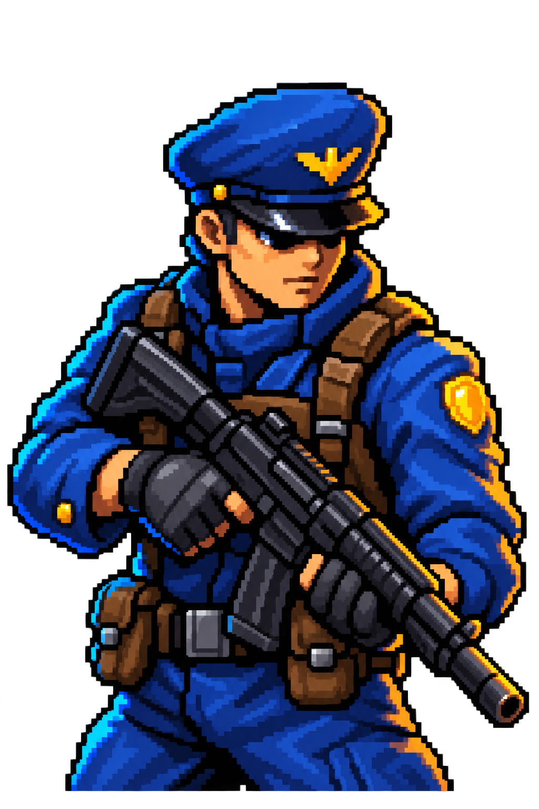

03 / Mobile game prototype
Army Survivors
An eight-minute action game where progression is visible: one operative becomes a moving squad.

The experiment
I wanted to know whether the familiar survivor-action loop could feel meaningfully different when progression appears as a growing formation, not only as larger numbers and more projectiles.
The result is a complete vertical slice built around movement, automatic combat, rescue objectives, upgrades, and a telegraphed boss.
What I built
- Touch and keyboard movement with automatic targeting and attacks
- XP, level-ups, upgrade choices, evolving weapons, and rescuable squadmates
- Multiple leaders, persistent currency, roster unlocks, accomplishments, and saves
- Randomized forest and tundra runs, a rescue minimap, boss telegraphs, and responsive UI
Key decisions
Complete loop before content volume
Menu, run, progression, boss, result, retry, and meta-progression all worked before I broadened the content.
Readability drives difficulty
Enemy roles, danger lanes, attacks, rewards, and squad state are communicated visually before the balance becomes more punishing.
Validate the actual build
I compiled it in Unity 2022.3 LTS, ran a project-specific content validator, built the standalone application, launched it, and visually inspected the result.
What I learned
Presentation is part of correctness. A mechanic can work numerically and still fail if the player cannot read an attack, understand an upgrade, or tell why the difficulty changed.
Unity 2022.3 LTS · C# · 2D physics · local saves · custom art · validation tooling